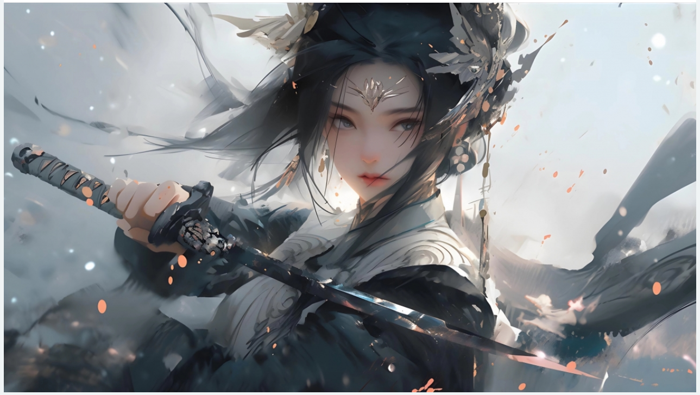
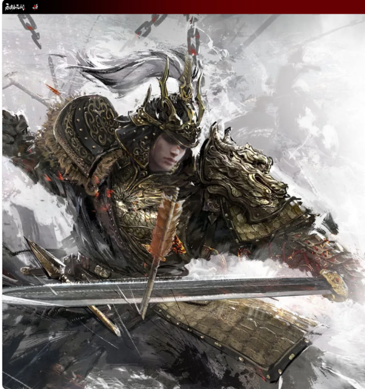
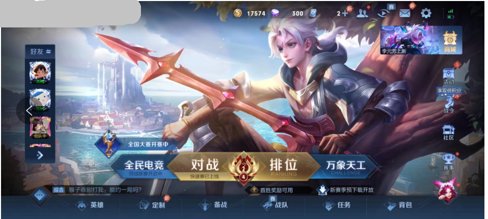
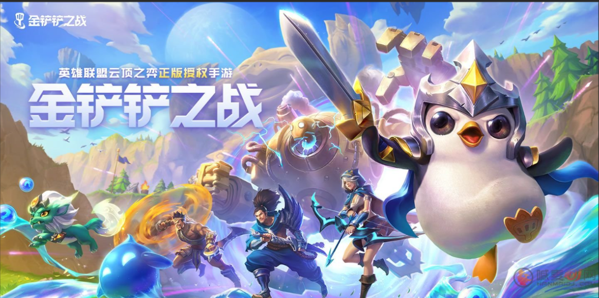
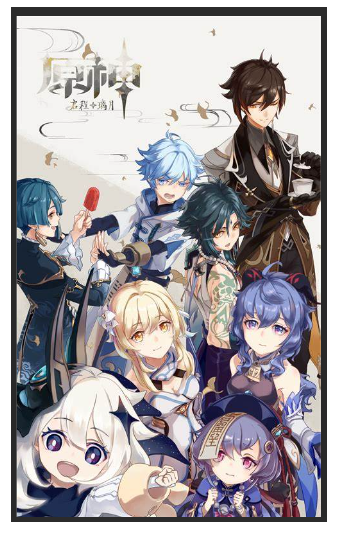

欢迎来到我的个人博客
Welcome to my personal blog
游戏介绍（详细内容点击图片获得）
游戏攻略（详细内容点击图片获得）

《永劫无间》是由网易旗下“24 Entertainment工作室”开发的一款多人动作竞技游戏，于2021年7月8日开启不删档测试，《永劫无间》Steam全球公测于2021年8月12日10：00正式开服。同年12月9日，《永劫无间》正式登陆EPIC商城 。2022年6月23日《永劫无间》正式登陆Xbox主机，首发加入XGP 。
游戏讲述了以虚构的幻想世界为背景，阴阳二神互相杀伐，导致世界处于永劫之中。玩家需扮演一名英雄，在地图中收集各种资源，与其他玩家对抗，生存到最后。
《王者荣耀》是由腾讯游戏天美工作室群开发并运营在Android、IOS、NS平台上的MOBA类国产手游，于2015年11月26日在Android、iOS平台上正式公测，游戏曾经使用名称有《英雄战迹》《王者联盟》。
王者荣耀中的玩法以竞技对战为主，玩家之间进行1V1、3V3、5V5等多种方式的PVP对战，在满足条件后可以参加游戏的排位赛等，还可以参加PVE的闯关模式，是属于推塔类型的游戏。


《金铲铲之战》是由腾讯游戏制作发行的一款策略塔防类手游，该作于2021年11月10日正式公开测试。
《金铲铲之战》是英雄联盟云顶之弈正版授权的自动战斗品类手游，每局比赛由八名玩家共同进行一场各自为战的博弈对抗，玩家通过招兵买马，融合英雄，提升战力，排兵布阵，成为最终立于战场上的赢家。
《原神》是由上海米哈游网络科技股份有限公司制作发行的一款开放世界冒险游戏，
游戏发生在一个被称作“提瓦特大陆”的幻想世界，在这里，被神选中的人将被授予“神之眼”，导引元素之力。玩家将扮演一位名为“旅行者”的神秘角色，在自由的旅行中邂逅性格各异、能力独特的同伴们，和他们一起击败强敌，找回失散的亲人——同时，逐步发掘“原神”的真相 。
